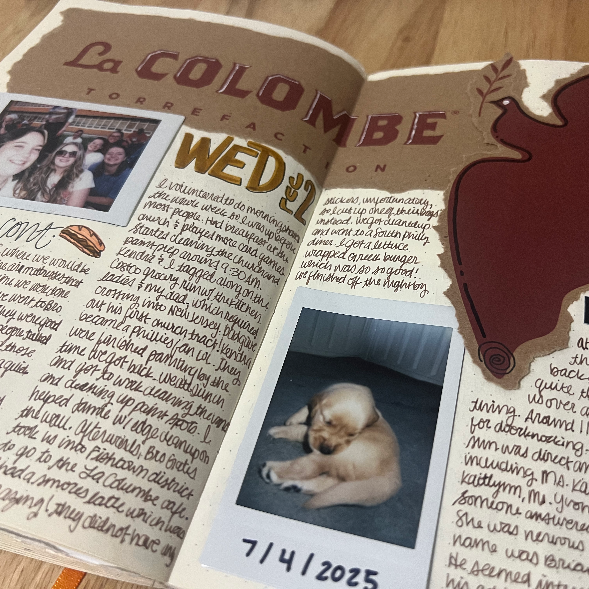
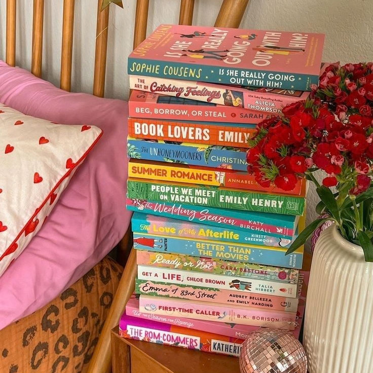
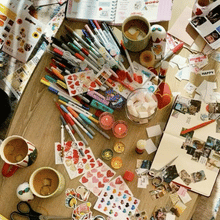
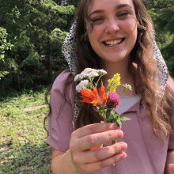
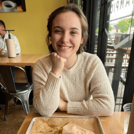
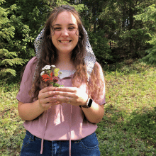
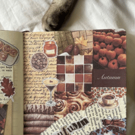
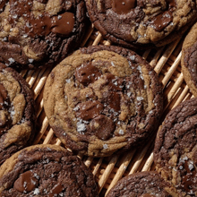

Welcome to the
Homebody Archives!
A little space for all things cozy and creative. Every month, I share new Junk Journal ideas and creative inspiration, updates from my Bookshelf, and a cozy baked Weekly Treat recipe. If you're new to my page, take a scroll through The Archives for creative ideas from previous months. There's always something new to read, make, bake, or get inspired by!
About the AuthorHi, I'm Maddie! I started the Homebody Archives after realizing that, somewhere between college, my career, and everything else life threw at me, I had left behind all the creative hobbies that used to bring me joy. Post-graduation, I found myself wanting to rediscover those little pieces that made me feel like myself again. This website is a record of that journey. Along the way, I've learned that making time for the small and enjoyable can be so incredibly valuable to every aspect of your life.
Take some time to be creative today!
I'm so glad you're here!
How about a sneak peek into next month's
Homebody Archive?

